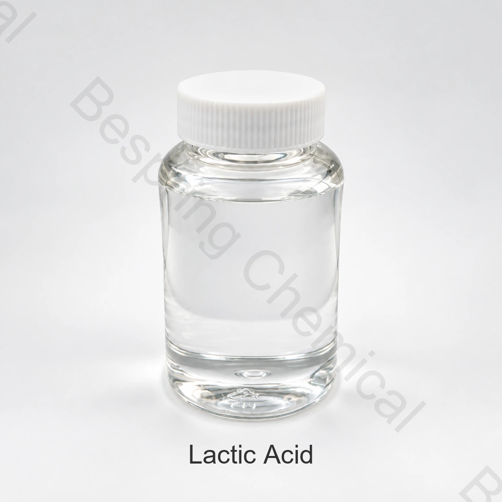

Марка и состав
Укажите форму продукта, состав, ключевые показатели и назначение.
Пищевой ингредиент · Регулятор кислотности · LA
Молочная кислота (INS 270) — пищевой регулятор кислотности. Концентрация, изомерный состав и показатели чистоты определяются спецификацией выбранной марки.

Изображение продукта · уточните марку и упаковку при заказе
Укажите требуемое качество, применение, количество, упаковку, место назначения и необходимые документы.
классСорт продуктов питания, при условии точной квалификации источника
СпецификацияАктуальный документ по запросу
УпаковкаПо согласованному предложению
Анализ партииЗапросите COA выбранной партии
Кратко о продукте
Молочная кислота (INS 270) — пищевой регулятор кислотности. Концентрация, изомерный состав и показатели чистоты определяются спецификацией выбранной марки.
Выбор марки зависит от предполагаемой функции, полной рецептуры, процесса и требований рынка. Условия заказа определяются согласованной спецификацией; результаты конкретной партии оценивают по её COA.
Руководство для закупщика
Сопоставьте состав, показатели, документы и условия поставки выбранной марки.
Укажите форму продукта, состав, ключевые показатели и назначение.
Запросите предложение с актуальной спецификацией, количеством, упаковкой, Incoterms и местом поставки.
Опишите пищевую систему, технологический процесс и критерии испытаний.
Запросите TDS, аналитические методы, COA и применимые сведения о происхождении, аллергенах и безопасности.
Пищевые применения
При выборе учитывают состав, процесс, требуемые свойства и правила рынка реализации.
Задайте целевой pH и кислотность, учитывая буферную способность продукта.
Оцените кислотный профиль, вкус и совместимость.
Проверьте внесение и распределение кислоты в рецептуре.
Учитывайте концентрацию раствора, материалы оборудования и инструкции SDS.
Выбор марки
CAS 50-21-5; INS 270. Укажите концентрацию, профиль L/D/DL, происхождение и требования к цвету и чистоте.
Согласуйте аналитический базис и методы. Результаты сравнивают при одинаковых условиях испытаний.
Опишите состав пищевой системы, порядок внесения, температуру, время и критерии оценки.
Согласуйте пищевой стандарт, примеси и применимые микробиологические критерии; результаты партии оценивают по COA.
Техническая документация по запросу
Числовая спецификация на странице не приведена. Запросите актуальную спецификацию выбранной марки, методы испытаний и критерии приёмки.
Запросите актуальную спецификацию или техническое описание (TDS), применимый паспорт безопасности (SDS), методы анализа и сертификат анализа (COA).
Запросите документы по пищевой безопасности, происхождению, аллергенам, требованиям Kosher и Halal, относящиеся к выбранной марке и производственной площадке.
Официальный источник: Монография ФАО/ВОЗ по молочной кислоте. Условия применения и маркировки определяются конкретным продуктом и рынком.
Условия использования: Международные идентификационные ссылки сами по себе не санкционируют каждую заявку. Покупатель несет ответственность за подтверждение категории продуктов питания, уровня использования, декларации этикетки и других требований на каждом целевом рынке.
Хранение и обращение
Вопросы покупателя
Молочная кислота (INS 270) — пищевой регулятор кислотности. Концентрация, изомерный состав и показатели чистоты определяются спецификацией выбранной марки.
CAS 50-21-5; INS 270. Укажите концентрацию, профиль L/D/DL, происхождение и требования к цвету и чистоте.
Запросите актуальную спецификацию или техническое описание (TDS), аналитические методы и образец сертификата анализа (COA). Для приёмки партии используют её результаты и согласованные критерии.
Запросите применимые SDS, сведения о безопасности пищевых продуктов, происхождении, аллергенах, производственной площадке и необходимые документы Kosher или Halal для конкретной марки. Доступность и область действия документов согласуют при закупке.
Укажите форму, состав или марку, применение, ключевые показатели, количество, упаковку, целевой рынок, документы, Incoterms и требуемую дату поставки.
Связанные разделы
Просмотрите полный портфель и доступные досье на технические продукты.
Обсудите актуальную спецификацию, документы, образцы и коммерческие требования.
Информация о закупке и экспортных документах для международных B2B клиентов.
Закупка по согласованной спецификации
Укажите марку или состав, применение, ключевые показатели, количество, упаковку, место назначения и необходимые документы.
Укажите марку и рынок назначения, чтобы уточнить доступность документов для вашего заказа.
Внешний источник не заменяет сертификат партии или спецификацию Bespring.